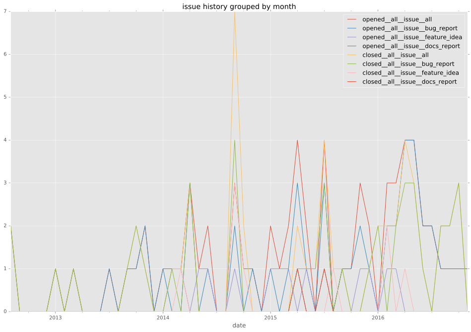
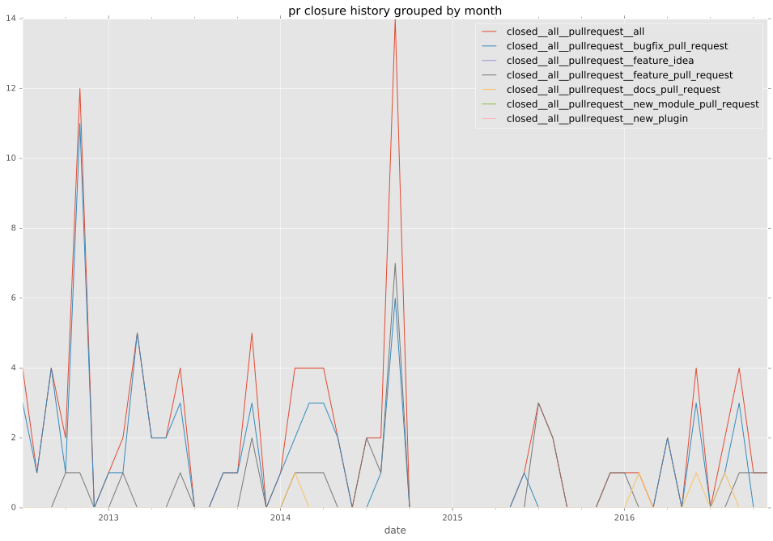

authors
- jpmens
maintainers
- jpmens
contributors
- sysadmin75 : 7 commits
- quiver : 1 commits
- jpmens : 28 commits
- dorfsmay : 6 commits
- mpdehaan : 39 commits
- muffl0n : 15 commits
- ostness : 1 commits
- woltage : 3 commits
- hutchic : 1 commits
- mscherer : 2 commits
- jctanner : 6 commits
- dagwieers : 5 commits
- offby1 : 1 commits
- willthames : 4 commits
- afunix : 1 commits
- gundalow : 2 commits
- mmatuska : 1 commits
- jlund : 11 commits
- so1gitworker : 2 commits
- techraf : 7 commits
- abadger : 11 commits
- Tinche : 13 commits
- bcoca : 9 commits
- tima : 5 commits
- dhozac : 1 commits
- msvab : 2 commits
- abackstrom : 5 commits
- danpilch : 6 commits
- jimi-c : 11 commits
total issue counts
unknown: 1
feature pull request: 27
docs report: 2
pullrequest: 105
docs pull request: 9
bugfix pull request: 68
feature idea: 12
issue: 66
bug report: 52
issue history

pullrequest history

days open by issue type
bugfix pull request
count: 99
std: 25.5945988041
min: 0
max: 158
median: 0.0
mean: 7.90909090909
all
count: 208
std: 75.3620147883
min: 0
max: 566
median: 2.0
mean: 34.3125
pullrequest
count: 0
std: nan
min: nan
max: nan
median: nan
mean: nan
docs pull request
count: 18
std: 12.2522506936
min: 0
max: 34
median: 1.0
mean: 8.66666666667
docs report
count: 2
std: 0.0
min: 0
max: 0
median: 0.0
mean: 0.0
feature pull request
count: 37
std: 87.390197085
min: 0
max: 304
median: 28.0
mean: 71.1891891892
feature idea
count: 7
std: 123.923939806
min: 5
max: 394
median: 137.0
mean: 151.857142857
issue
count: 0
std: nan
min: nan
max: nan
median: nan
mean: nan
bug report
count: 44
std: 106.537894379
min: 0
max: 566
median: 7.0
mean: 56.8409090909
closures grouped by total days open